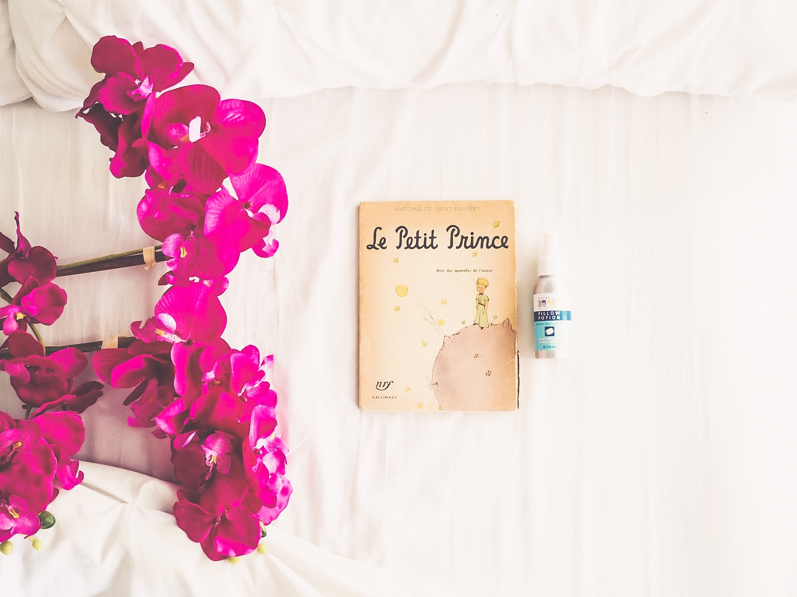

Saint-Exupery was a ruined pees of France and he was a writer and pilot. The Little Prince is his last work. The story has a "The Little Prince" it's hero. The Little Prince lived ina very small planet with rose. Well, on day he set out on-a trip that to get over a haughty attitude of rose. and he came to the earth after dropped in six planet. but he saw the earth it an aggregate of a badness and absurdity and loneiness, he was saw the six planet. The Little Prince had a blossom of rose, it was a he brought up a flower dotes uper himself. but he was suprise to see that on the earth, several thousand rose are full bloom, and he has confusion of mind to the worthes. At this time, a fox made a timely apperance in front of him. Fox said him, "It is on-ly with the heart that on-e can see rightly. what is essentioal is inkisifle to eye." he has taking a fox woeds. he saw that there are many stars on the sky. but on-ly on-e planet has look better among the many stars. beacause it has a in his lovable rode planet.
At long last he went with a sheep his planet and with his lovable rose. As above, this story is adult's story of a juvenile. I think this story desire to lose of humanity from the citify, mechanization, and the murder family to lose of humanity, that is gave us a presentation is fidelity of human relations. So, writer tell us that see with on-e's minds eye of child of the world. and "The Little Prince"is a symbolic of "good and evil", that "we can see and we can't see" "solitude and frindship with human relations" "meaning and meaningless" and writer say again awaken us that meaning of valuable life. So< I think this is on air of reality of about this noble.